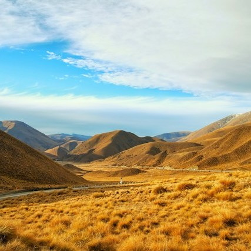

Why New Zealand? Why kiwis?
New Zealand, the land of a thousand wonders
The name "New Zealand" comes from “Zeeland” (which translates to
"Sealand") in Dutch, after the islands were seen by Dutch explorer
Abel Tasman. Zeeland is a province of the Netherlands.
In the early 1900s, cartoonists started to use images of the kiwi
bird to represent New Zealand as a country. During the First World
War, New Zealand soldiers were referred to as 'kiwis', and the
nickname stuck. Eventually, the term Kiwi was attributed to all
New Zealanders, who proudly embraced the moniker.
Itineraries
Discover New Zealand, from North to South

New Zealand: Highlights Itinerary
14 Days
| Total trip distance | 2,444km |
|---|---|
| Highlights |
|

New Zealand: North Island Itinerary
10 Days
| Total trip distance | 2063 km |
|---|---|
| Highlights |
|

New Zealand: South Island Itinerary
16 Days
| Total trip distance | 2,463km |
|---|---|
| Highlights |
|